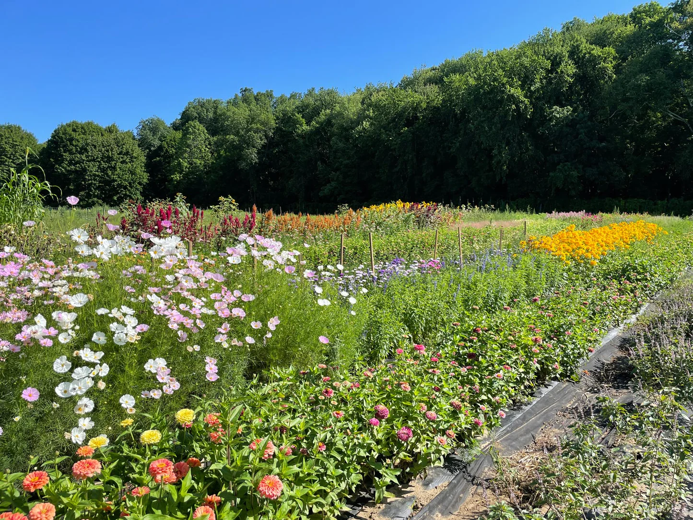

About Us
Welcome to Solar Bloom Botanics, where we believe in the beauty of sustainable living intertwined with the elegance of nature. Our passion for flowers and commitment to eco-friendly practices drive us to create a unique floral experience for you.
Our Mission
Harvesting sunshine goes beyond our solar-powered practices; it symbolizes our dedication to spreading joy and positivity through the language of flowers. Every arrangement tells a story, and we take pride in crafting moments of serenity for our customers.